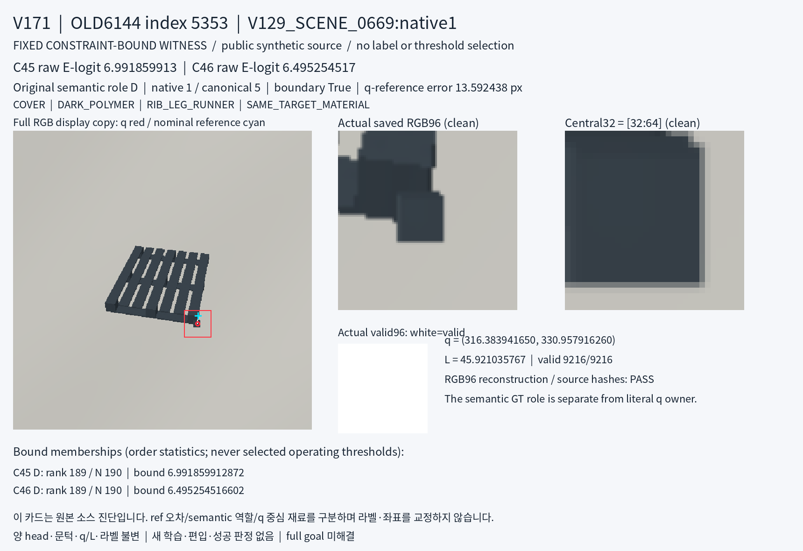
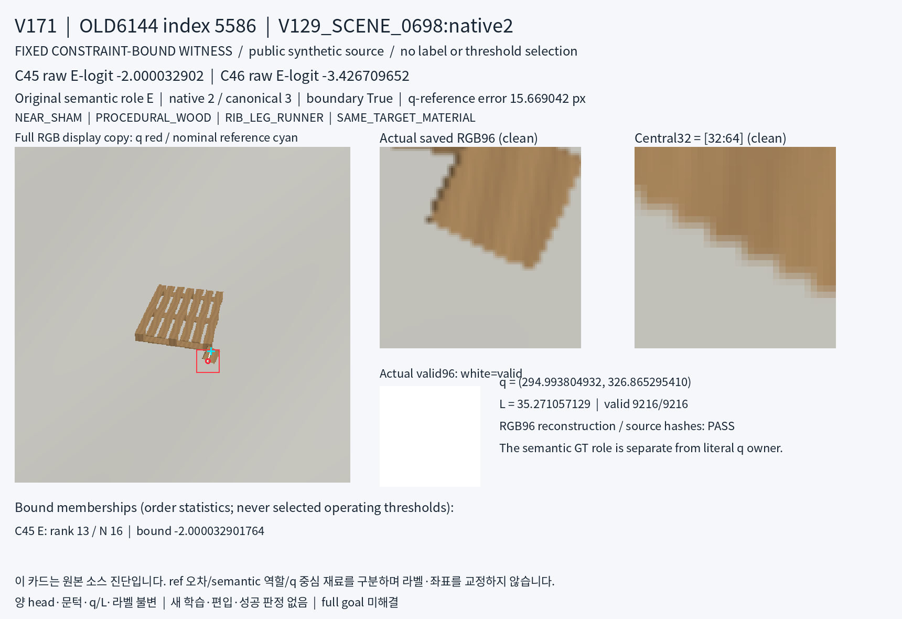
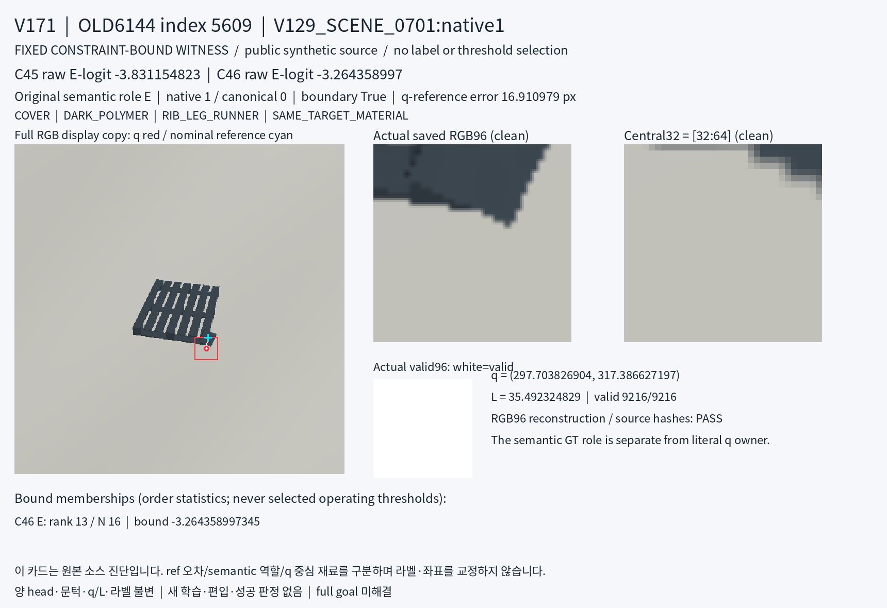

V171 · 공개 합성 constraint witness crop 진단
실제 원본 재구성 3/3 PASS, 카드 실제 확인 3/3 완료. 전체 목표는 미해결입니다. 새 학습·좌표/라벨 교정·학습 편입은 없습니다.
V170에서 SAME_TARGET_MATERIAL D/E 조건의 상충 경계를 만든 각 head의 모든 동일점수 tie를 그대로 보존했습니다. 고정 bound membership4개를 원본3행으로 dedup했으며, 선택 상한·교체·좋은 사례 선별은 없습니다. 극단 constraint witness이므로 전체 데이터의 대표성 표본이 아닙니다.
원 PNG/chunk SHA, decoded RGB·saved96·valid96 array SHA를 검증했습니다. 원 q/L로 frozen crop 연산을 재실행한 결과와 실제 저장 RGB96/valid96가 세 행 모두 바이트 단위로 일치했습니다. central32는 저장96의 [32:64,32:64] 정확한 slice입니다. q(빨간 원)와 nominal GT reference(청록 십자)는 fullscene 표시용 복사본에만 그렸고 raw96/c32는 clean 상태입니다.
원 semantic D/E, q-reference 차이, literal q 주변 appearance는 별도입니다. 세 행 모두 원 metadata의 boundary=true이며 q-reference 오차는13.59~16.91px입니다. 아래는 assistant의 RGB 관찰이지 새 owner/native 가림 gold가 아닙니다. RGB만으로 같은 재질의 instance, 물리 native 가림 또는 라벨 오류를 확정할 수 없습니다. V170의 고정 정의하 수학적 문턱 불가능성은 그대로이며, 세 관찰로 전체 원인이나 미래 모델의 가능성을 확정하지 않습니다.
5353 · V129_SCENE_0669:native1
원 semantic D · native 1 / canonical 5 · q-reference 13.592438px · boundary=true
고정 raw E-logit C45: 6.991859913 / C46: 6.495254517
q는 cyan nominal reference보다 아래쪽의 짙은 돌출 사각 재료에 놓인 듯 보인다. saved96와 중심32에는 짙은 단단한 표면과 회색 바닥 경계가 보인다. 같은 재질/색이므로 이 조각이 선택 팔레트 자체인지 다른 물체인지는 RGB만으로 확정하지 않는다.

5586 · V129_SCENE_0698:native2
원 semantic E · native 2 / canonical 3 · q-reference 15.669042px · boundary=true
고정 raw E-logit C45: -2.000032902 / C46: -3.426709652
saved96와 중심32에 황갈색 재료와 회색 바닥의 사선 경계가 크게 보인다. q 부근은 재료 끝/경계에 가까워 literal center owner를 확정하지 않는다. nominal reference는 원 q보다 위쪽이며 원 semantic E와 local appearance는 별도 기술해야 한다.

5609 · V129_SCENE_0701:native1
원 semantic E · native 1 / canonical 0 · q-reference 16.910979px · boundary=true
고정 raw E-logit C45: -3.831154823 / C46: -3.264358997
saved96 중앙 및 중심32의 대부분, 특히 중심 부근은 회색 바닥처럼 보이며 짙은 팔레트/물체 가장자리는 중심32 오른쪽 위에 있다. cyan nominal reference는 q보다 위쪽이다. 원 semantic E가 literal q-center material과 같은 명제를 뜻하는지 이 RGB 관찰만으로 판정하거나 재라벨하지 않는다.

실행 당시 COMPLETE의 actual_visual_inspection=pending 필드는 보존했습니다. 이후 별도 실제3뷰 receipt가 완료를 바인딩합니다. 이 페이지 작성에서는 기존 JSON만 읽었고 새 source/GT mask/model/private 본문은 읽지 않았습니다.
결과 JSON · 변경 없는 선택 · 원본 재구성 완료 기록 · 실제3뷰 관찰 receipt
PNG3장은 tools.view_image로 실제 확인했습니다. HTML은 소스와 링크만 점검했으며 브라우저 렌더링은 수행하지 않았습니다. 모델·문턱·데이터 정의 선택, 새 학습·교정·편입·성공 판정 없음.